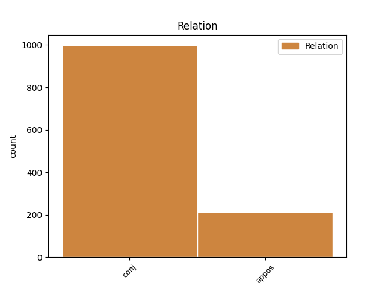
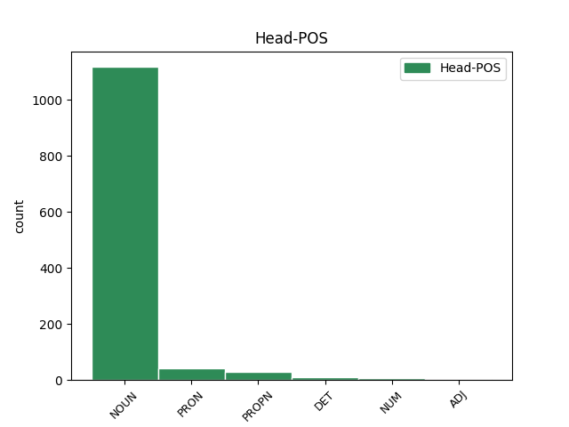
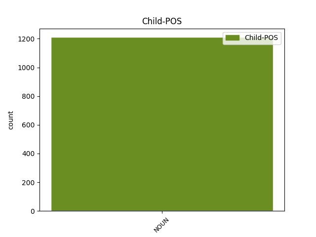

Distribution of features within this leaf



Agreement Rules sorted by frequency.
- When the dependent token is the conjunct(conj) of the head token, and the head token is NOUN and the dependent token is NOUN.
1 Aby _ _ _ _ 0 _ _ _
2 bys _ _ _ _ 0 _ _ _
3 toto _ _ _ _ 0 _ _ _
4 břímě _ _ _ _ 0 _ _ _
5 a _ _ _ _ 0 _ _ _
6 zodpovědnost _ _ _ _ 0 _ _ _
7 unesl _ _ _ _ 0 _ _ _
8 , _ _ _ _ 0 _ _ _
9 chci _ _ _ _ 0 _ _ _
10 ti _ _ _ _ 0 _ _ _
11 dát _ _ _ _ 0 _ _ _
12 i _ _ _ _ 0 _ _ _
13 tento _ _ _ _ 0 _ _ _
14 klíč _ _ _ _ 0 _ _ _
15 a _ _ _ _ 0 _ _ _
16 svěřit _ _ _ _ 0 _ _ _
17 tajemství _ _ _ _ 0 _ _ _
18 své _ _ _ _ 0 _ _ _
19 energie energie NOUN NNFS2-----A---- Case=Gen|Gender=Fem|Number=Sing|Polarity=Pos 0 _ _ _
20 a _ _ _ _ 0 _ _ _
21 úspěchu úspěch NOUN NNIS2-----A---- Animacy=Inan|Case=Gen|Gender=Masc|Number=Sing|Polarity=Pos 19 conj _ SpaceAfter=No
22 . _ _ _ _ 0 _ _ _
23 " _ _ _ _ 0 _ _ _
1 Ceremoniář ceremoniář NOUN NNMS1-----A---- Animacy=Anim|Case=Nom|Gender=Masc|Number=Sing|Polarity=Pos 0 _ _ _
2 , _ _ _ _ 0 _ _ _
3 muž muž NOUN NNMS1-----A---- Animacy=Anim|Case=Nom|Gender=Masc|Number=Sing|Polarity=Pos 1 appos _ _
4 ze _ _ _ _ 0 _ _ _
5 staré _ _ _ _ 0 _ _ _
6 školy _ _ _ _ 0 _ _ _
7 , _ _ _ _ 0 _ _ _
8 si _ _ _ _ 0 _ _ _
9 vyčistil _ _ _ _ 0 _ _ _
10 monokl _ _ _ _ 0 _ _ _
11 a _ _ _ _ 0 _ _ _
12 posunkem _ _ _ _ 0 _ _ _
13 odmítl _ _ _ _ 0 _ _ _
14 . _ _ _ _ 0 _ _ _
1 Potom _ _ _ _ 0 _ _ _
2 si _ _ _ _ 0 _ _ _
3 on on PRON PPMS1--3------- Animacy=Anim|Case=Nom|Gender=Masc|Number=Sing|Person=3|PronType=Prs 0 _ _ _
4 i _ _ _ _ 0 _ _ _
5 jeho _ _ _ _ 0 _ _ _
6 synové syn NOUN NNMP1-----A---- Animacy=Anim|Case=Nom|Gender=Masc|Number=Plur|Polarity=Pos 3 conj _ _
7 vzali _ _ _ _ 0 _ _ _
8 šabatové _ _ _ _ 0 _ _ _
9 oblečení _ _ _ _ 0 _ _ _
10 , _ _ _ _ 0 _ _ _
11 na _ _ _ _ 0 _ _ _
12 slavnostně _ _ _ _ 0 _ _ _
13 prostřený _ _ _ _ 0 _ _ _
14 stůl _ _ _ _ 0 _ _ _
15 přinesli _ _ _ _ 0 _ _ _
16 chutné _ _ _ _ 0 _ _ _
17 jídlo _ _ _ _ 0 _ _ _
18 a _ _ _ _ 0 _ _ _
19 usadili _ _ _ _ 0 _ _ _
20 se _ _ _ _ 0 _ _ _
21 k _ _ _ _ 0 _ _ _
22 večeři _ _ _ _ 0 _ _ _
23 . _ _ _ _ 0 _ _ _
1 To _ _ _ _ 0 _ _ _
2 jsem _ _ _ _ 0 _ _ _
3 já já PRON PP-S1--1------- Case=Nom|Number=Sing|Person=1|PronType=Prs 0 _ _ _
4 , _ _ _ _ 0 _ _ _
5 tvůj _ _ _ _ 0 _ _ _
6 syn syn NOUN NNMS1-----A---- Animacy=Anim|Case=Nom|Gender=Masc|Number=Sing|Polarity=Pos 3 appos _ SpaceAfter=No
7 ! _ _ _ _ 0 _ _ _
8 " _ _ _ _ 0 _ _ _
9 volal _ _ _ _ 0 _ _ _
10 . _ _ _ _ 0 _ _ _
1 S _ _ _ _ 0 _ _ _
2 chutí _ _ _ _ 0 _ _ _
3 četl _ _ _ _ 0 _ _ _
4 O _ _ _ _ 0 _ _ _
5 ' _ _ _ _ 0 _ _ _
6 Henryho Henry PROPN NNMS4-----A---- Animacy=Anim|Case=Acc|Gender=Masc|NameType=Giv|Number=Sing|Polarity=Pos 0 _ _ _
7 a _ _ _ _ 0 _ _ _
8 Čechovovy _ _ _ _ 0 _ _ _
9 povídky povídka NOUN NNFP4-----A---- Case=Acc|Gender=Fem|Number=Plur|Polarity=Pos 6 conj _ SpaceAfter=No
10 , _ _ _ _ 0 _ _ _
11 i _ _ _ _ 0 _ _ _
12 Maupassanta _ _ _ _ 0 _ _ _
13 , _ _ _ _ 0 _ _ _
14 Simenona _ _ _ _ 0 _ _ _
15 nebo _ _ _ _ 0 _ _ _
16 Gardnera _ _ _ _ 0 _ _ _
17 . _ _ _ _ 0 _ _ _
1 Máša Máša PROPN NNFS1-----A---- Case=Nom|Gender=Fem|NameType=Giv|Number=Sing|Polarity=Pos 0 _ _ _
2 a _ _ _ _ 0 _ _ _
3 Veronika _ _ _ _ 0 _ _ _
4 , _ _ _ _ 0 _ _ _
5 jediné _ _ _ _ 0 _ _ _
6 dvě _ _ _ _ 0 _ _ _
7 bytosti bytost NOUN NNFP1-----A---- Case=Nom|Gender=Fem|Number=Plur|Polarity=Pos 1 appos _ SpaceAfter=No
8 , _ _ _ _ 0 _ _ _
9 které _ _ _ _ 0 _ _ _
10 by _ _ _ _ 0 _ _ _
11 nerad _ _ _ _ 0 _ _ _
12 opustil _ _ _ _ 0 _ _ _
13 . _ _ _ _ 0 _ _ _
1 Zmocnil _ _ _ _ 0 _ _ _
2 se _ _ _ _ 0 _ _ _
3 ho _ _ _ _ 0 _ _ _
4 strach _ _ _ _ 0 _ _ _
5 a _ _ _ _ 0 _ _ _
6 přál _ _ _ _ 0 _ _ _
7 si _ _ _ _ 0 _ _ _
8 být _ _ _ _ 0 _ _ _
9 co _ _ _ _ 0 _ _ _
10 nejdál _ _ _ _ 0 _ _ _
11 odtud _ _ _ _ 0 _ _ _
12 , _ _ _ _ 0 _ _ _
13 doma _ _ _ _ 0 _ _ _
14 , _ _ _ _ 0 _ _ _
15 kde _ _ _ _ 0 _ _ _
16 je _ _ _ _ 0 _ _ _
17 všechno všechen DET PLNS1---------- Case=Nom|Gender=Neut|Number=Sing|PronType=Tot 0 _ _ _
18 na _ _ _ _ 0 _ _ _
19 svém _ _ _ _ 0 _ _ _
20 místě _ _ _ _ 0 _ _ _
21 , _ _ _ _ 0 _ _ _
22 matka matka NOUN NNFS1-----A---- Case=Nom|Gender=Fem|Number=Sing|Polarity=Pos 17 appos _ _
23 i _ _ _ _ 0 _ _ _
24 jejich _ _ _ _ 0 _ _ _
25 dům _ _ _ _ 0 _ _ _
26 . _ _ _ _ 0 _ _ _
1 Strýc _ _ _ _ 0 _ _ _
2 , _ _ _ _ 0 _ _ _
3 korpulentní _ _ _ _ 0 _ _ _
4 a _ _ _ _ 0 _ _ _
5 dobrosrdečný _ _ _ _ 0 _ _ _
6 , _ _ _ _ 0 _ _ _
7 hned _ _ _ _ 0 _ _ _
8 uvítal _ _ _ _ 0 _ _ _
9 svého _ _ _ _ 0 _ _ _
10 asketického _ _ _ _ 0 _ _ _
11 synovce _ _ _ _ 0 _ _ _
12 bohatou _ _ _ _ 0 _ _ _
13 hostinou _ _ _ _ 0 _ _ _
14 , _ _ _ _ 0 _ _ _
15 ale _ _ _ _ 0 _ _ _
16 ten _ _ _ _ 0 _ _ _
17 se _ _ _ _ 0 _ _ _
18 nedotkl _ _ _ _ 0 _ _ _
19 ani _ _ _ _ 0 _ _ _
20 ryb _ _ _ _ 0 _ _ _
21 ani _ _ _ _ 0 _ _ _
22 husí _ _ _ _ 0 _ _ _
23 pečínky _ _ _ _ 0 _ _ _
24 , _ _ _ _ 0 _ _ _
25 ani _ _ _ _ 0 _ _ _
26 bílého bílý ADJ AANS2----1A---- Case=Gen|Degree=Pos|Gender=Neut|Number=Sing|Polarity=Pos 0 _ _ _
27 ani _ _ _ _ 0 _ _ _
28 červeného _ _ _ _ 0 _ _ _
29 vína víno NOUN NNNS2-----A---- Case=Gen|Gender=Neut|Number=Sing|Polarity=Pos 26 conj _ SpaceAfter=No
30 , _ _ _ _ 0 _ _ _
31 spokojil _ _ _ _ 0 _ _ _
32 se _ _ _ _ 0 _ _ _
33 jen _ _ _ _ 0 _ _ _
34 s _ _ _ _ 0 _ _ _
35 trochou _ _ _ _ 0 _ _ _
36 zeleniny _ _ _ _ 0 _ _ _
37 a _ _ _ _ 0 _ _ _
38 sklenicí _ _ _ _ 0 _ _ _
39 vody _ _ _ _ 0 _ _ _
40 . _ _ _ _ 0 _ _ _
1 O _ _ _ _ 0 _ _ _
2 naší _ _ _ _ 0 _ _ _
3 naivní _ _ _ _ 0 _ _ _
4 drzosti _ _ _ _ 0 _ _ _
5 svědčí _ _ _ _ 0 _ _ _
6 už _ _ _ _ 0 _ _ _
7 ta _ _ _ _ 0 _ _ _
8 skutečnost _ _ _ _ 0 _ _ _
9 , _ _ _ _ 0 _ _ _
10 že _ _ _ _ 0 _ _ _
11 jsem _ _ _ _ 0 _ _ _
12 se _ _ _ _ 0 _ _ _
13 vydal _ _ _ _ 0 _ _ _
14 zrekognoskovat _ _ _ _ 0 _ _ _
15 rovnou _ _ _ _ 0 _ _ _
16 jeden jeden NUM ClIS4---------- Animacy=Inan|Case=Acc|Gender=Masc|Number=Sing|NumForm=Word|NumType=Card|NumValue=1,2,3 0 _ _ _
17 z _ _ _ _ 0 _ _ _
18 největších _ _ _ _ 0 _ _ _
19 sálů _ _ _ _ 0 _ _ _
20 v _ _ _ _ 0 _ _ _
21 Praze _ _ _ _ 0 _ _ _
22 - _ _ _ _ 0 _ _ _
23 Divadlo divadlo NOUN NNNS4-----A---- Case=Acc|Gender=Neut|Number=Sing|Polarity=Pos 16 appos _ _
24 E _ _ _ _ 0 _ _ _
25 . _ _ _ _ 0 _ _ _
26 F _ _ _ _ 0 _ _ _
27 . _ _ _ _ 0 _ _ _
28 Buriana _ _ _ _ 0 _ _ _
29 . _ _ _ _ 0 _ _ _
1 A _ _ _ _ 0 _ _ _
2 je _ _ _ _ 0 _ _ _
3 tu _ _ _ _ 0 _ _ _
4 konečně _ _ _ _ 0 _ _ _
5 příjemná _ _ _ _ 0 _ _ _
6 nálada _ _ _ _ 0 _ _ _
7 , _ _ _ _ 0 _ _ _
8 projevující _ _ _ _ 0 _ _ _
9 se _ _ _ _ 0 _ _ _
10 zálibnou _ _ _ _ 0 _ _ _
11 žvanivostí _ _ _ _ 0 _ _ _
12 všech všechen DET PLMP2---------- Animacy=Anim|Case=Gen|Gender=Masc|Number=Plur|PronType=Tot 0 _ _ _
13 , _ _ _ _ 0 _ _ _
14 zejména _ _ _ _ 0 _ _ _
15 však _ _ _ _ 0 _ _ _
16 primáře primář NOUN NNMS2-----A---- Animacy=Anim|Case=Gen|Gender=Masc|Number=Sing|Polarity=Pos 12 conj _ SpaceAfter=No
17 , _ _ _ _ 0 _ _ _
18 který _ _ _ _ 0 _ _ _
19 poslouchá _ _ _ _ 0 _ _ _
20 své _ _ _ _ 0 _ _ _
21 vlastní _ _ _ _ 0 _ _ _
22 průpovídky _ _ _ _ 0 _ _ _
23 zamilovanýma _ _ _ _ 0 _ _ _
24 ušima _ _ _ _ 0 _ _ _
25 . _ _ _ _ 0 _ _ _
1 Řečník _ _ _ _ 0 _ _ _
2 představil _ _ _ _ 0 _ _ _
3 zesnulou zesnulý ADJ AAFS4----1A---- Case=Acc|Degree=Pos|Gender=Fem|Number=Sing|Polarity=Pos 0 _ _ _
4 - _ _ _ _ 0 _ _ _
5 moji _ _ _ _ 0 _ _ _
6 dceru dcera NOUN NNFS4-----A---- Case=Acc|Gender=Fem|Number=Sing|Polarity=Pos 3 appos _ _
7 - _ _ _ _ 0 _ _ _
8 a _ _ _ _ 0 _ _ _
9 bez _ _ _ _ 0 _ _ _
10 ceremonií _ _ _ _ 0 _ _ _
11 přednesl _ _ _ _ 0 _ _ _
12 dojemnou _ _ _ _ 0 _ _ _
13 báseň _ _ _ _ 0 _ _ _
14 . _ _ _ _ 0 _ _ _
1 K _ _ _ _ 0 _ _ _
2 restauraci _ _ _ _ 0 _ _ _
3 Červený _ _ _ _ 0 _ _ _
4 mlýn _ _ _ _ 0 _ _ _
5 zbývalo _ _ _ _ 0 _ _ _
6 jen _ _ _ _ 0 _ _ _
7 pár _ _ _ _ 0 _ _ _
8 kroků _ _ _ _ 0 _ _ _
9 , _ _ _ _ 0 _ _ _
10 nanejvýš _ _ _ _ 0 _ _ _
11 sto sto NUM ClNP1---------- Case=Nom|Gender=Neut|Number=Plur|NumForm=Word|NumType=Card|NumValue=1,2,3 0 _ _ _
12 nebo _ _ _ _ 0 _ _ _
13 dvě _ _ _ _ 0 _ _ _
14 stě sto NOUN NNNP1-----A---1 Case=Nom|Gender=Neut|Number=Plur|Polarity=Pos 11 conj _ _
15 metrů _ _ _ _ 0 _ _ _
16 . _ _ _ _ 0 _ _ _
Disagree Examples:
1 A _ _ _ _ 0 _ _ _
2 na _ _ _ _ 0 _ _ _
3 tyhle _ _ _ _ 0 _ _ _
4 útržky _ _ _ _ 0 _ _ _
5 napište _ _ _ _ 0 _ _ _
6 šestnáct šestnáct NUM Cn-S4---------- Case=Acc|Number=Sing|NumForm=Word|NumType=Card 0 _ _ _
7 největších _ _ _ _ 0 _ _ _
8 hodnot _ _ _ _ 0 _ _ _
9 , _ _ _ _ 0 _ _ _
10 jaké _ _ _ _ 0 _ _ _
11 v _ _ _ _ 0 _ _ _
12 životě _ _ _ _ 0 _ _ _
13 máte _ _ _ _ 0 _ _ _
14 , _ _ _ _ 0 _ _ _
15 šestnáct _ _ _ _ 0 _ _ _
16 věcí věc NOUN NNFP2-----A---- Case=Gen|Gender=Fem|Number=Plur|Polarity=Pos 6 appos _ SpaceAfter=No
17 , _ _ _ _ 0 _ _ _
18 na _ _ _ _ 0 _ _ _
19 nichž _ _ _ _ 0 _ _ _
20 vám _ _ _ _ 0 _ _ _
21 v _ _ _ _ 0 _ _ _
22 životě _ _ _ _ 0 _ _ _
23 nejvíc _ _ _ _ 0 _ _ _
24 záleží _ _ _ _ 0 _ _ _
25 . _ _ _ _ 0 _ _ _
1 Záleží _ _ _ _ 0 _ _ _
2 na _ _ _ _ 0 _ _ _
3 tom _ _ _ _ 0 _ _ _
4 , _ _ _ _ 0 _ _ _
5 že _ _ _ _ 0 _ _ _
6 by _ _ _ _ 0 _ _ _
7 se _ _ _ _ 0 _ _ _
8 objevilo _ _ _ _ 0 _ _ _
9 tolik tolik DET Ca--1---------- Case=Nom|NumType=Card|PronType=Dem 0 _ _ _
10 nenápadných _ _ _ _ 0 _ _ _
11 a _ _ _ _ 0 _ _ _
12 tolik _ _ _ _ 0 _ _ _
13 potřebných _ _ _ _ 0 _ _ _
14 radostí radost NOUN NNFP2-----A---- Case=Gen|Gender=Fem|Number=Plur|Polarity=Pos 9 conj _ SpaceAfter=No
15 , _ _ _ _ 0 _ _ _
16 které _ _ _ _ 0 _ _ _
17 by _ _ _ _ 0 _ _ _
18 svět _ _ _ _ 0 _ _ _
19 rozsvítily _ _ _ _ 0 _ _ _
20 . _ _ _ _ 0 _ _ _
21 . _ _ _ _ 0 _ _ _
22 . _ _ _ _ 0 _ _ _
1 Když _ _ _ _ 0 _ _ _
2 čítám _ _ _ _ 0 _ _ _
3 o _ _ _ _ 0 _ _ _
4 výzkumech _ _ _ _ 0 _ _ _
5 , _ _ _ _ 0 _ _ _
6 jež _ _ _ _ 0 _ _ _
7 se _ _ _ _ 0 _ _ _
8 v _ _ _ _ 0 _ _ _
9 poslední _ _ _ _ 0 _ _ _
10 době _ _ _ _ 0 _ _ _
11 provádějí _ _ _ _ 0 _ _ _
12 s _ _ _ _ 0 _ _ _
13 rostlinami _ _ _ _ 0 _ _ _
14 , _ _ _ _ 0 _ _ _
15 o _ _ _ _ 0 _ _ _
16 měření měření NOUN NNNS6-----A---- Case=Loc|Gender=Neut|Number=Sing|Polarity=Pos 0 _ _ _
17 jejich _ _ _ _ 0 _ _ _
18 reakcí _ _ _ _ 0 _ _ _
19 , _ _ _ _ 0 _ _ _
20 citlivosti citlivost NOUN NNFS2-----A---- Case=Gen|Gender=Fem|Number=Sing|Polarity=Pos 16 conj _ _
21 na _ _ _ _ 0 _ _ _
22 lidskou _ _ _ _ 0 _ _ _
23 společnost _ _ _ _ 0 _ _ _
24 , _ _ _ _ 0 _ _ _
25 na _ _ _ _ 0 _ _ _
26 zájem _ _ _ _ 0 _ _ _
27 , _ _ _ _ 0 _ _ _
28 sympatii _ _ _ _ 0 _ _ _
29 i _ _ _ _ 0 _ _ _
30 krutost _ _ _ _ 0 _ _ _
31 , _ _ _ _ 0 _ _ _
32 vzpomínám _ _ _ _ 0 _ _ _
33 na _ _ _ _ 0 _ _ _
34 tu _ _ _ _ 0 _ _ _
35 šťastnou _ _ _ _ 0 _ _ _
36 květinu _ _ _ _ 0 _ _ _
37 . _ _ _ _ 0 _ _ _
1 O _ _ _ _ 0 _ _ _
2 tom _ _ _ _ 0 _ _ _
3 kotěti kotě NOUN NNNS6-----A---- Case=Loc|Gender=Neut|Number=Sing|Polarity=Pos 0 _ _ _
4 v _ _ _ _ 0 _ _ _
5 zapomenuté _ _ _ _ 0 _ _ _
6 srbské _ _ _ _ 0 _ _ _
7 samotě _ _ _ _ 0 _ _ _
8 , _ _ _ _ 0 _ _ _
9 o _ _ _ _ 0 _ _ _
10 vás _ _ _ _ 0 _ _ _
11 , _ _ _ _ 0 _ _ _
12 vážený _ _ _ _ 0 _ _ _
13 univerzitní _ _ _ _ 0 _ _ _
14 profesore profesor NOUN NNMS5-----A---- Animacy=Anim|Case=Voc|Gender=Masc|Number=Sing|Polarity=Pos 3 conj _ SpaceAfter=No
15 , _ _ _ _ 0 _ _ _
16 o _ _ _ _ 0 _ _ _
17 mně _ _ _ _ 0 _ _ _
18 , _ _ _ _ 0 _ _ _
19 světoběžníkovi _ _ _ _ 0 _ _ _
20 . _ _ _ _ 0 _ _ _
1 Tu _ _ _ _ 0 _ _ _
2 dnešní _ _ _ _ 0 _ _ _
3 tmu _ _ _ _ 0 _ _ _
4 vidí _ _ _ _ 0 _ _ _
5 tolik tolik DET Ca--1---------- Case=Nom|NumType=Card|PronType=Dem 0 _ _ _
6 dětí _ _ _ _ 0 _ _ _
7 , _ _ _ _ 0 _ _ _
8 tolik _ _ _ _ 0 _ _ _
9 osamělých _ _ _ _ 0 _ _ _
10 dětí dítě NOUN NNFP2-----A---- Case=Gen|Gender=Fem|Number=Plur|Polarity=Pos 5 appos _ SpaceAfter=No
11 , _ _ _ _ 0 _ _ _
12 dívá _ _ _ _ 0 _ _ _
13 se _ _ _ _ 0 _ _ _
14 do _ _ _ _ 0 _ _ _
15 ní _ _ _ _ 0 _ _ _
16 čistýma _ _ _ _ 0 _ _ _
17 andělskýma _ _ _ _ 0 _ _ _
18 očima _ _ _ _ 0 _ _ _
19 , _ _ _ _ 0 _ _ _
20 očima _ _ _ _ 0 _ _ _
21 úzkosti _ _ _ _ 0 _ _ _
22 . _ _ _ _ 0 _ _ _